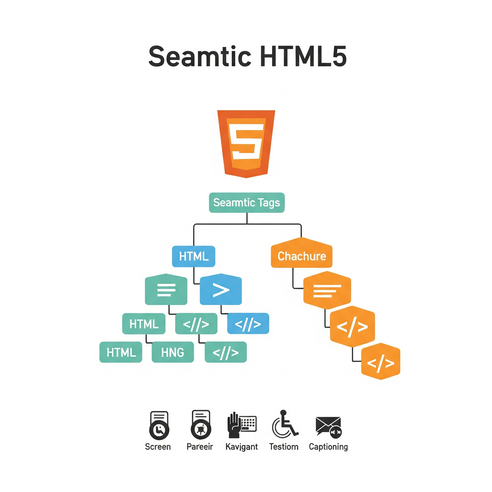
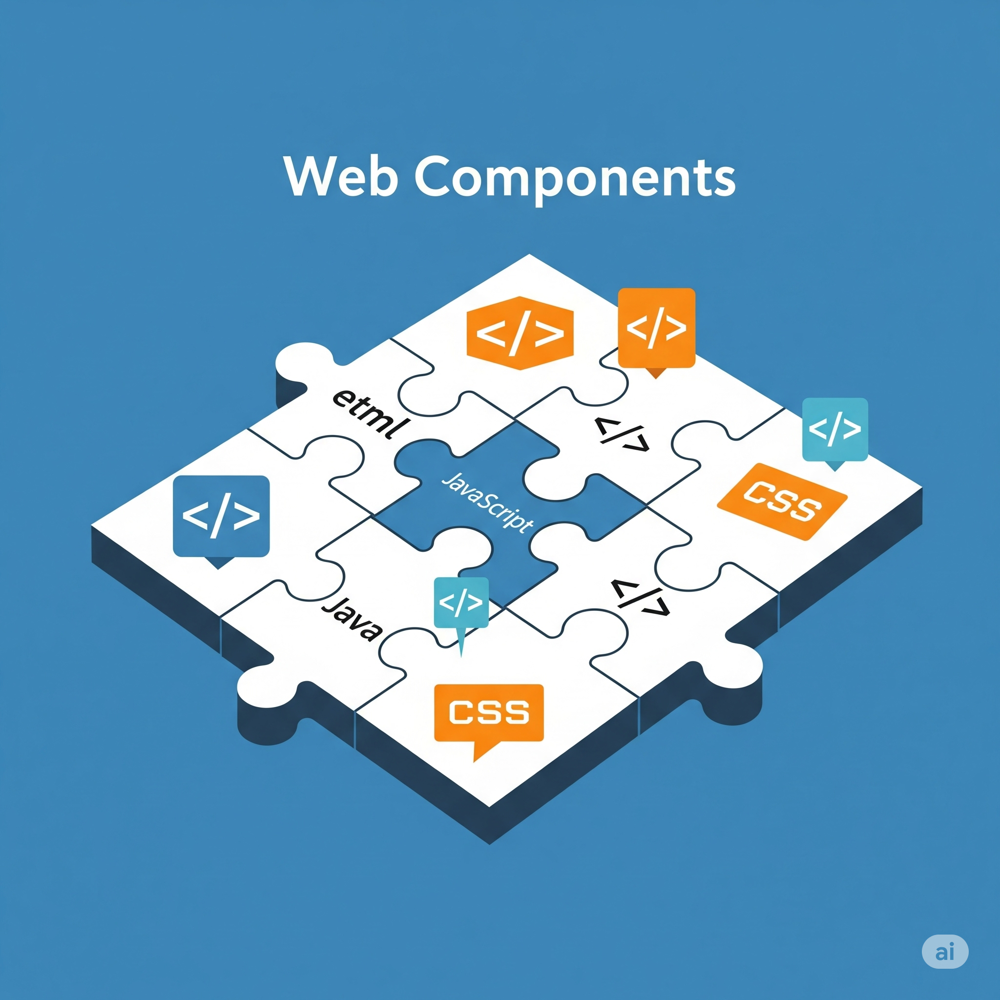

CSS Grid vs. Flexbox: ¿Cuándo usar cada uno en tus diseños Responsive?
En el mundo del desarrollo web, la creación de diseños adaptables es fundamental. Para lograrlo, CSS Grid y Flexbox se han consolidado como herramientas indispensables, ofreciendo un control sin precedentes sobre la disposición de los elementos. Sin embargo, la pregunta recurrente es: ¿cuál usar y cuándo? Comprender las fortalezas de cada uno y cómo se complementan es clave para construir interfaces de usuario robustas y escalables.
Flexbox sobresale en la alineación y distribución de elementos en una única dimensión, ya sea fila o columna. Es perfecto para componentes como barras de navegación, alineación de elementos dentro de una tarjeta o la creación de formularios flexibles. Por otro lado, CSS Grid está diseñado para diseños bidimensionales, permitiéndonos estructurar la página entera en filas y columnas complejas, creando layouts intrincados con facilidad y precisión. A menudo, la solución más potente implica la combinación de ambos: usar Grid para el macro-layout de la página y Flexbox para organizar los elementos dentro de las celdas de ese grid.
Dominar tanto CSS Grid como Flexbox no solo optimizará tu flujo de trabajo, sino que también te permitirá crear diseños responsive más eficientes y elegantes. La elección no es una cuestión de "uno u otro", sino de entender cómo explotar sus capacidades únicas para resolver los desafíos de diseño específicos de cada componente de tu UI.

Más allá de HTML semántico: Optimizando tu estructura para el SEO y la accesibilidad
El HTML semántico va más allá de simplemente mostrar contenido; se trata de dotar de significado a la estructura de tu página, tanto para los navegadores como para los motores de búsqueda y, crucialmente, para los usuarios con diferentes capacidades. Una estructura HTML bien pensada no solo impulsa tu posicionamiento en las SERP (páginas de resultados de búsqueda), sino que también garantiza que tu sitio sea usable y accesible para todos, incluyendo aquellos que dependen de tecnologías de asistencia.
La correcta utilización de etiquetas HTML5 como <header>, <nav>, <main>, <article>, <section>, <footer> y <aside> no es una mera formalidad. Estas etiquetas proporcionan un mapa claro de tu contenido, permitiendo a los crawlers indexar tu sitio de manera más efectiva y a los lectores de pantalla navegar la página con lógica. Además, la implementación de roles ARIA (Accessible Rich Internet Applications) es vital para añadir semántica donde HTML no la proporciona de forma nativa, mejorando la interacción para usuarios con discapacidades. Por ejemplo, al usar role="button" o aria-label en elementos personalizados, garantizamos que su función sea comprendida.
En resumen, invertir tiempo en una estructura HTML semántica y accesible es una inversión en la calidad y el alcance de tu sitio web. No solo cumplirás con las mejores prácticas de desarrollo, sino que también construirás una experiencia inclusiva que beneficie a todos los usuarios, mejorando simultáneamente tu visibilidad en línea.

Introducción a Web Components: Construyendo componentes reutilizables y encapsulados
En la evolución del desarrollo frontend, la necesidad de crear interfaces modulares, reutilizables y con un rendimiento óptimo ha llevado a la popularización de los Web Components. Esta suite de estándares W3C permite a los desarrolladores construir componentes personalizados y encapsulados, que pueden ser utilizados en cualquier framework de JavaScript, o incluso sin ninguno, promoviendo la interoperabilidad y la consistencia en el diseño.
Los Web Components se basan en cuatro tecnologías principales: Custom Elements (para definir nuevas etiquetas HTML), Shadow DOM (para encapsular estilos y estructura, evitando conflictos), HTML Templates (para definir fragmentos de HTML reutilizables) y ES Modules (para importar y exportar componentes). Al combinar estas piezas, podemos crear elementos UI complejos que operan de forma independiente, sin interferir con el resto del documento. Por ejemplo, podríamos definir un <my-custom-button> con su propio estilo y comportamiento, que se renderice siempre igual, sin importar dónde se utilice en la aplicación.
Adoptar Web Components te abre la puerta a un sistema de diseño más robusto y a la creación de bibliotecas de componentes que pueden ser compartidas y mantenidas con mayor facilidad. Son una herramienta poderosa para escalar proyectos grandes y asegurar la coherencia visual y funcional a lo largo de tu aplicación.

El futuro del Frontend: WebAssembly, WASM y la velocidad de la web
La web moderna exige rendimiento y capacidad de respuesta sin precedentes. Mientras JavaScript ha sido el rey indiscutible del frontend, la llegada de WebAssembly (WASM) marca un hito significativo, prometiendo llevar aplicaciones de alto rendimiento, escritas en lenguajes como C++, Rust o C#, directamente al navegador. Este nuevo formato de código binario compacto no es un reemplazo de JavaScript, sino un complemento potente que abre nuevas posibilidades.
WebAssembly permite ejecutar código compilado con una velocidad casi nativa, superando las limitaciones de rendimiento de JavaScript en tareas computacionalmente intensivas. Esto es particularmente relevante para aplicaciones exigentes como juegos 3D, edición de video en el navegador, simulaciones complejas o incluso aplicaciones de realidad aumentada. Su diseño modular y su integración con el ecosistema web existente lo convierten en una tecnología de vanguardia que ya está siendo adoptada por gigantes como Google y Mozilla para mejorar la experiencia de usuario en sus plataformas.
Si bien JavaScript seguirá siendo fundamental para la interactividad y la manipulación del DOM, WASM se perfila como la solución para los cuellos de botella de rendimiento. Entender su potencial y sus casos de uso es clave para cualquier desarrollador frontend que desee estar a la vanguardia de las tecnologías web del mañana.